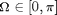
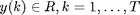
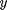
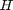
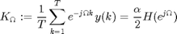
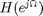
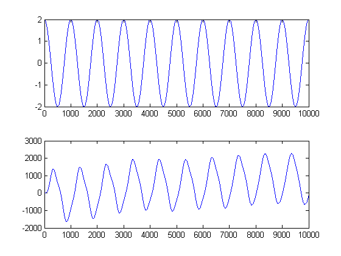

Correlation Method Example / Sanity Check
- Justin Pearson
- ECE 147C
- 2014.04.06
Contents
You should run ece147c_lab0_v3.mdl (in the same dir as this file) before running this file. The simulation produces variables: encoders, motor_cmd, trigger_signal.
assert( exist('encoders','var') && exist('motor_cmd','var') && exist('trigger_signal','var') )
Compute intermediate vars
u = motor_cmd.signals.values(:,1); y = encoders.signals.values(:,2); T = length(y); % number of samples Omega = 2*pi*0.001; % sine block into motor_cmd has freq 2pi rad/sec & 0.001 sec/sample; Omega is in rad/sample a = 2; % amplitude of the motor_cmd sine wave block
Your input u should be a cosine, ie, its first element should be its amplitude.
assert( abs(u(1)-a) < 1e-3 ) % roughly
Correlation method
From the notes, for a fixed  and given data , the relationship between  and the transfer function  is

x=exp(-i*Omega*[1:T]); K = 1/T*(x*y) H = K*2/a
K = -4.6560e+002 -4.9713e+002i H = -4.6560e+002 -4.9713e+002i
That value of is one point on the bode plot. It has magnitude and phase
abs(H) % gain (unitless) angle(H) % phase shift (rad)
ans = 681.1236 ans = -2.3235
Sanity check: Gain
Estimate how much the plant amplified u to y, and compare it to the gain at this frequency .
figure subplot(2,1,1); plot(u) subplot(2,1,2); plot(y)
Looks like about a swing of 4 for u and 2900 for y, hence:
2900/4
ans = 725
Pretty close to abs(H).
Sanity check: Phase
Looking at the plot, it looks like u hits a peak at sample 8000 and y hits a peak at 8350. Hence the phase should something like
- 350 * Omega % 350 samp * Omega rad/samp
ans = -2.1991
Pretty close to angle(H).
Could we have done better by throwing away the initial transient? Be careful to throw away starting at an index where u is at its peak (still a cosine)!
y = y(3000:end); T = length(y); x=exp(-i*Omega*[1:T]); K = 1/T*(x*y) H = K*2/a abs(H) angle(H)
K = -4.7915e+002 -4.9374e+002i H = -4.7915e+002 -4.9374e+002i ans = 688.0183 ans = -2.3412
Not a big improvement. Our initial test was pretty long. If it had been shorter, we might've gained more from tossing the initial data.